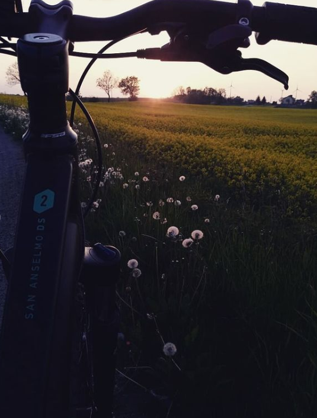
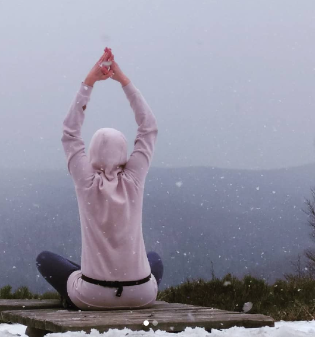
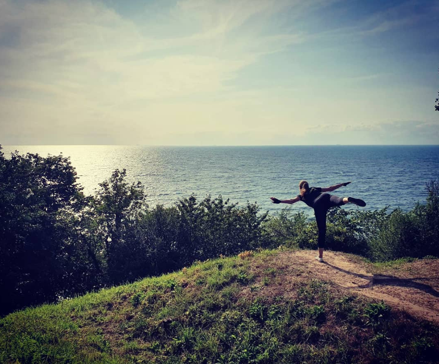
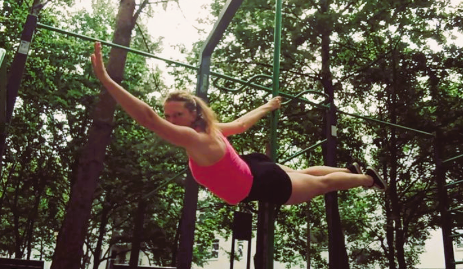
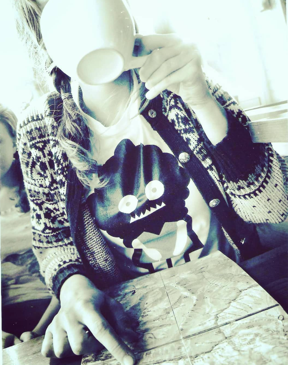

About me
Graduated with master degree in ethnology financial analyst, cyclist, traveler who loves hitchiking, poledancer. Passionate about coding. Love to learn. My main goal is to change my profesional path and start to do what I like. I believe it can happen




